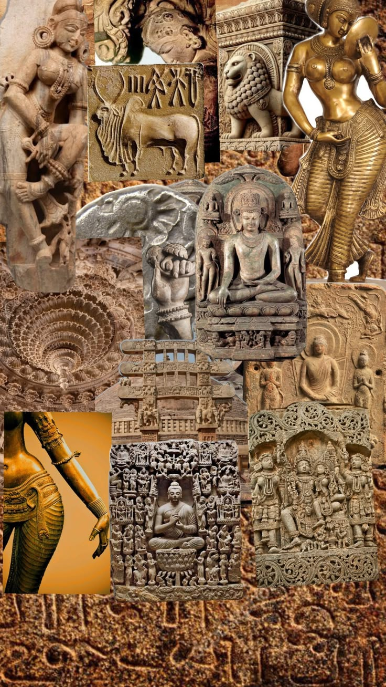
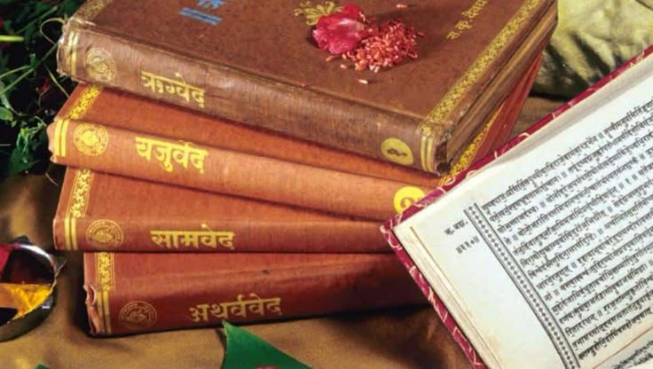
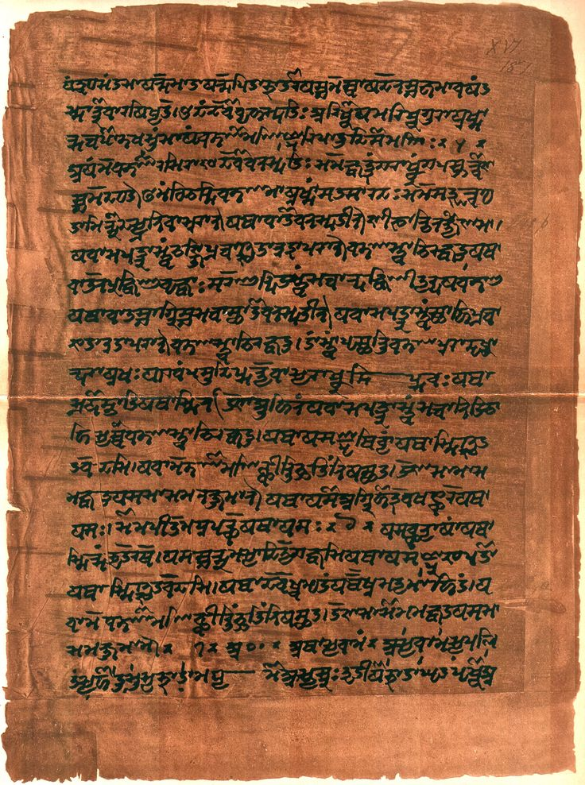
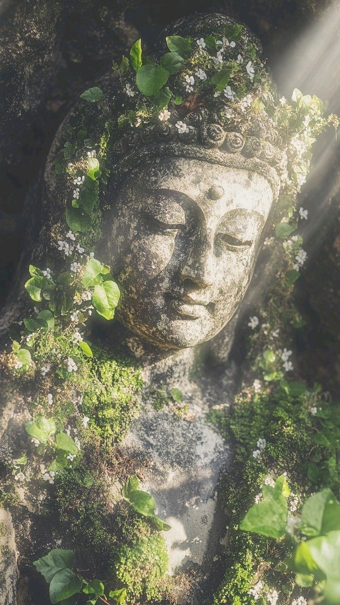

A tradition that moved from ritual hymns to introspective metaphysics,
and eventually gave rise to two movements — Buddhism and Jainism —
that would go on to shape belief across all of Asia.
Introduction
Ancient Indian philosophy developed across many centuries through a
dialogue between ritual tradition, metaphysical speculation, ethical
discipline, and the search for liberation. Although it is often compared
with ancient Greek philosophy, its
historical development followed a distinct path. Some of its earliest
surviving texts already asked questions about cosmic order, the origin
of existence, the nature of consciousness, and humanity's place within a
universe understood as part of a much larger cycle of life, death, and
renewal.
Indian philosophy did not emerge as a single unified doctrine or from
one individual founder. It developed through a vast intellectual
tradition containing anonymous hymns, dialogues between teachers and
students, debates among wandering philosophers, and eventually highly
systematic schools of logic,
metaphysics,
epistemology, and
ethics. Questions about
Atman, Brahman,
karma, samsara, knowledge, suffering,
and liberation became central to philosophical traditions that often
disagreed profoundly with one another.
This page follows that development through nine major chapters: the
early
Vedic world and its ideas of
ritual and cosmic order; the movement from sacrifice toward
philosophical inquiry; the introspective transformation of the
Upanishads; the development
of karma, rebirth, and liberation; the intellectual revolution of the
śramaṇa movements; and the emergence of
Buddhism,
Jainism, epic philosophy, and
the early foundations of India's great classical schools of thought.
Unlike philosophical traditions whose history can often be organized
around a relatively clear sequence of named authors and surviving books,
much of early Indian thought was transmitted orally for generations.
Many important texts were composed, expanded, edited, and preserved over
long periods, and the historical dates of early philosophers and
scriptures remain subjects of scholarly debate. The dates used on this
page should therefore be understood as broad chronological guides rather
than precise and universally agreed points in time.
The result is one of the world's longest and most diverse philosophical
histories. Ancient Indian thinkers investigated not only what the
universe is made of, but what it means to know something, whether a
permanent self exists, why suffering occurs, how actions shape future
existence, and whether human beings can attain a condition of genuine
freedom. These questions would continue to shape Indian philosophy for
more than two thousand years and would eventually influence intellectual
traditions across South, Central, East, and Southeast Asia.
Timeline at a Glance
c. 3300–1300 BCE
The Indus Civilization develops and declines across northwestern
South Asia; its script remains undeciphered, limiting certainty
about its religious and philosophical ideas.
c. 1500–1000 BCE
The early Vedic period and composition of the oldest layers of the
Rigveda establish a tradition centered on hymns, ritual, and cosmic
order.
c. 1000–700 BCE
Later Vedic literature increasingly reflects on the meaning of
ritual, sacred speech, sacrifice, and the hidden structure of
reality.
c. 800–300 BCE
The Upanishadic tradition places the self, ultimate reality, karma,
rebirth, knowledge, and liberation at the center of philosophical
inquiry.
c. 6th–5th Century BCE
The śramaṇa movements transform the intellectual landscape as
Buddhism, Jainism, and other ascetic and philosophical traditions
challenge established Vedic authority.
c. 5th Century BCE
Siddhartha Gautama, the Buddha, teaches a path centered on
suffering, its causes, the possibility of liberation, and the
transformation of human understanding.
c. 3rd Century BCE
Emperor Ashoka's patronage helps Buddhism spread across and beyond
the Indian subcontinent, beginning a much wider Asian philosophical
history.
c. 300 BCE onward
Major philosophical traditions become increasingly systematic
through sutras, commentaries, debates, and formal theories of
reality, knowledge, reasoning, language, and liberation.
🏺 India Before Philosophy

The Indus Civilization — one of the world's great Bronze Age urban
civilizations, known for planned cities, sophisticated water systems,
skilled craftsmanship, standardized production, and long-distance
trade.
Long before the earliest surviving Vedic hymns were composed, the Indian
subcontinent was home to a wide range of ancient communities and
cultures. Among the most remarkable was the Indus Civilization, also
called the Harappan Civilization, which flourished primarily in the
northwestern regions of South Asia. Its development stretched across
many centuries, with its mature urban phase generally placed around the
third millennium BCE. Major settlements such as Harappa, Mohenjo-daro,
Dholavira, and Rakhigarhi reveal sophisticated planning, extensive trade
networks, specialized crafts, and complex systems for managing water and
urban life. :contentReference[oaicite:1]{index=1}
Yet the intellectual and religious life of the Indus Civilization
remains difficult to reconstruct. Its script has not been conclusively
deciphered, and historians therefore cannot read its literature,
philosophical debates, myths, or theological reflections in the way they
can read later Sanskrit, Pali, and Prakrit texts. Archaeological objects
provide evidence of ritual activity and symbolic practices, but they
cannot by themselves establish a complete philosophical system. For this
reason, scholars must be cautious about drawing direct conclusions
between Indus religious practices and the philosophical traditions that
developed in later periods. :contentReference[oaicite:2]{index=2}
The earliest textual foundations of what later became Indian philosophy
are usually sought in the Vedic tradition. The oldest layers of this
tradition belong broadly to the second millennium BCE, although the
precise chronology of individual hymns and texts remains uncertain. The
Vedic corpus preserved hymns, ritual instructions, and increasingly
complex reflections on humanity's relationship with natural forces and
the wider structure of the cosmos. Its intellectual world would
eventually become the starting point from which both orthodox and
heterodox philosophical traditions developed.
:contentReference[oaicite:3]{index=3}
Vedic society included pastoral and agricultural communities whose
religious life gave major importance to sacred speech and
yajña, or sacrificial ritual. Deities such as Agni,
associated with fire, Indra, associated with power and storms, and
Varuna, associated with cosmic and moral order, appeared within a
worldview that connected human action with the larger processes of
nature. Ritual was therefore not treated simply as a private act of
worship. Its correct performance was understood within a broader attempt
to maintain harmony between human society and the ordered structure of
the universe.
One of the important concepts associated with this early intellectual
world was ṛta, often understood as cosmic order,
regularity, or the principle by which the universe maintains coherence.
The movement of celestial bodies, the recurrence of natural processes,
the proper ordering of ritual, and the moral structure of human life
could all be understood against this larger background. Later Indian
philosophy would transform and challenge these inherited ideas, but the
early concern with order already encouraged thinkers to ask whether
reality possesses principles that can be discovered rather than merely
accepted through inherited custom.
The transition from Vedic religion to Indian philosophy was therefore
not a simple movement from "myth" to "reason." Philosophical reflection
emerged gradually from within an already highly developed culture of
ritual, language, memory, and speculation. The hymns themselves
sometimes asked questions that resisted easy answers: What existed
before the universe? How did order emerge from what was before it? Can
human beings truly know the origin of everything? These questions opened
intellectual possibilities that later generations would pursue with
increasing philosophical depth.
Over time, attention increasingly moved from the outward performance of
ritual toward questions about its meaning and the reality behind visible
experience. The search for cosmic order would become a search for
ultimate reality; reflection on action would develop into theories of
karma; and questions about human existence would turn inward toward
consciousness and the self. It was within this vast and changing
intellectual landscape — shaped by inherited Vedic traditions, new
social conditions, wandering teachers, and competing philosophical
movements — that the extraordinary history of ancient Indian philosophy
began.
1️⃣ The Vedic World (c. 1500–1000 BCE)
The Foundations of Indian Thought

The Vedic tradition preserved ancient hymns, rituals, and reflections
on cosmic order that became the foundation of later Indian philosophy.
The earliest foundations of ancient Indian philosophy lie in the Vedic
tradition, a vast body of sacred literature composed and transmitted
orally over many centuries. The four Vedas — the Rigveda, Samaveda,
Yajurveda, and Atharvaveda — contain hymns, chants, ritual formulas, and
reflections on the powers believed to govern the cosmos. The Rigveda is
generally regarded as the oldest of these collections and preserves a
picture of a world in which human beings, natural forces, divine powers,
and cosmic order were understood as deeply connected.
At the center of this worldview stood the idea of ṛta,
the principle of cosmic order, regularity, and right arrangement.
Seasons followed their patterns, celestial bodies moved through the sky,
sacrifices were performed according to established forms, and human
society itself was understood within a larger ordered universe. The
earliest Indian thinkers therefore did not begin with philosophy
separated sharply from religion; questions about reality emerged within
reflection on ritual, language, nature, and humanity's relationship to
the wider cosmos.
Vedic religion gave particular importance to yajña, or
sacrifice. Ritual action was not understood merely as symbolic worship
but as something believed to participate in maintaining the relationship
between human society and the cosmic order. Priests developed elaborate
systems for preserving the exact pronunciation and performance of sacred
texts, creating an extraordinary oral tradition whose precision helped
preserve philosophical and religious ideas for centuries before they
were committed to writing.
Yet even within these ancient hymns, questions appeared that went beyond
ritual practice. What existed before the world? How did the universe
begin? What lies behind the visible diversity of nature? The famous
Nasadiya Sukta, or Hymn of Creation, is especially remarkable because it
does not present a simple dogmatic explanation. Instead, it reflects on
the possibility that the ultimate origin of the universe may remain
unknown, revealing an early willingness to confront uncertainty about
the deepest questions of existence.
The Vedic world therefore provided more than the religious background
for Indian philosophy. It supplied many of the concepts, problems, and
intellectual habits that later thinkers would transform. Questions about
cosmic order would eventually become metaphysical questions about
reality; reflection on ritual action would develop into theories of
karma; and speculation about the universe would gradually turn inward
toward one of the central concerns of Indian philosophy: the nature of
the self.
2️⃣ Ritual, Sacrifice & Cosmic Order (c. 1000–700 BCE)
When Ritual Became a Theory of Reality
As Vedic culture developed, philosophical reflection increasingly grew
around the interpretation of ritual itself. The Brahmanas and related
ritual literature sought to explain why sacrifices had to be performed
in particular ways and what cosmic consequences followed from correct
action. The world was imagined as an interconnected structure in which
speech, ritual gestures, fire, seasons, social life, and divine powers
could correspond to one another through complex systems of analogy.
This period is important because it shows that Indian philosophy did not
suddenly appear when thinkers abandoned religion. Rather, philosophical
inquiry gradually emerged from attempts to understand the deeper meaning
of inherited practices. A sacrifice could be interpreted not simply as
an external ceremony but as an expression of hidden relationships
between the human being and the universe. The search for those hidden
relationships encouraged increasingly abstract thinking about unity,
causation, order, and the structure of reality.
The authority of sacred speech also became an intellectual problem.
Vedic traditions placed enormous importance on the preservation of
language, sound, and recitation. This concern would later contribute to
sophisticated Indian theories about language, testimony, meaning, and
knowledge. Classical philosophers would eventually ask whether words
reveal reality, whether testimony can produce genuine knowledge, and
whether sacred texts possess authority because of divine origin, human
reliability, or some other philosophical principle.
:contentReference[oaicite:1]{index=1}
At the same time, a gradual tension began to emerge between external
ritual performance and the search for internal understanding. If ritual
action maintained order, what gave ritual its power? Was the deepest
truth found in the visible ceremony, or did the ceremony point toward a
more fundamental reality hidden beneath ordinary experience? These
questions helped prepare the intellectual transformation associated with
the Aranyakas and, eventually, the Upanishads.
3️⃣ The Upanishadic Turn (c. 800–300 BCE)
From Ritual to the Search for the Self

The Upanishads transformed Indian thought by placing the self,
ultimate reality, knowledge, and liberation at the center of inquiry.
The Upanishads mark one of the great philosophical transformations in
ancient Indian thought. Without entirely abandoning the intellectual
world of the Vedas, these texts increasingly shifted attention away from
the external performance of sacrifice and toward direct inquiry into the
nature of reality, consciousness, and liberation. Their teachings often
appear in dialogues between teachers and students, sages and kings, or
seekers engaged in demanding philosophical questions about what a human
being truly is.
At the center of many Upanishadic discussions stands
Atman, the deepest or innermost self. The search for
Atman was not simply an attempt to describe personality or individual
psychology. The question was metaphysical: beneath changing thoughts,
sensations, memories, and bodily conditions, is there an enduring
reality that constitutes the true self? The Upanishadic answer often
moved toward the idea that genuine self-knowledge requires looking
beyond the ordinary identity constructed from social roles and changing
experiences.
This inquiry became connected with the concept of
Brahman, the ultimate reality or fundamental principle
underlying the universe. Different Upanishadic texts present complex and
sometimes varied accounts, but the relationship between Atman and
Brahman became one of the defining problems of later Indian philosophy.
The famous expression tat tvam asi, often translated as "That
thou art," became especially influential in traditions that interpreted
ultimate reality and the deepest self as profoundly united.
The Upanishads also helped establish the intellectual framework of
karma, samsara, and
moksha. Human actions were increasingly understood as
connected to future consequences and continued existence within the
cycle of birth and rebirth. Liberation therefore became the highest
philosophical and spiritual goal: freedom from ignorance, bondage, and
the cycle of repeated existence through a transformation of knowledge
and understanding.
This Upanishadic turn permanently changed Indian philosophy. The
fundamental question was no longer only how the universe should be
ritually maintained. It became: Who am I? What is the
ultimate reality behind the changing world? Why are human beings bound
to suffering and rebirth? And what kind of knowledge can bring genuine
freedom? These questions would be answered in radically different ways
by Vedanta, Buddhism, Jainism, Samkhya, Yoga, and many other Indian
philosophical traditions.
4️⃣ Karma, Samsara & Liberation
The Great Problem of Human Existence
One of the most distinctive features of Indian philosophy is the central
importance given to the problem of bondage and liberation. Across
traditions that disagreed profoundly about metaphysics, religion, and
knowledge, thinkers repeatedly returned to a similar existential
question: why do human beings remain trapped in dissatisfaction,
ignorance, suffering, and repeated existence, and how can this condition
be overcome?
The concept of karma became essential to this
discussion. In its broad philosophical development, karma refers to the
moral and causal significance of action. Actions are not treated as
isolated events that disappear once they are completed; they can produce
consequences that shape future experience. Different traditions
developed highly sophisticated and sometimes incompatible theories about
exactly how karma operates, what performs an action, and whether karmic
consequences require a permanent self.
Samsara, the cycle of birth, death, and rebirth,
provided the larger setting for these theories. Ordinary existence was
increasingly understood not as a single isolated lifetime but as part of
an extended process in which beings continue through different
conditions of existence. The philosophical challenge therefore became
more radical than simply achieving happiness within the present world:
the deepest goal was to understand and overcome the conditions that
perpetuate bondage itself.
The answer was moksha, or liberation, although the
meaning of liberation differed between schools. For some traditions it
meant realizing the true nature of Atman and Brahman. For Samkhya it
meant discriminating pure consciousness from material nature. For
Buddhism it meant nirvana and the cessation of the processes associated
with suffering and craving. Jain philosophy described liberation through
the purification of the soul from karmic bondage.
These ideas gave Indian philosophy a distinctive unity without making it
intellectually uniform. Philosophers could disagree about whether the
self exists, whether God exists, whether matter is eternal, and whether
knowledge comes through perception or scripture, while still treating
liberation from ignorance and bondage as one of the highest goals of
philosophical inquiry. :contentReference[oaicite:2]{index=2}
5️⃣ The Śramaṇa Revolution (c. 6th–4th Century BCE)
New Paths Beyond Vedic Orthodoxy
During the first millennium BCE, northern India witnessed major social,
political, and intellectual changes. Urban centers expanded, new states
emerged across the Indo-Gangetic Plain, trade increased, and wandering
teachers began competing publicly over questions of morality, knowledge,
destiny, and liberation. This intellectual environment produced the
śramaṇa movements, traditions associated with
renunciation, ascetic discipline, meditation, and philosophical debate.
These movements challenged the assumption that Vedic sacrifice and
priestly authority provided the only path to the highest truth. A seeker
could leave ordinary household life, adopt ascetic practices, and pursue
liberation through personal discipline and philosophical understanding.
The authority of tradition itself became open to debate. Some teachers
defended the Vedas, while others rejected their authority entirely and
proposed alternative explanations of the self, the universe, and moral
responsibility.
This period was intellectually diverse far beyond Buddhism and Jainism.
Ancient sources describe materialists, skeptics, determinists, ascetics,
and teachers who disagreed about whether actions have consequences,
whether human beings possess freedom, and whether anything survives
death. Indian philosophy developed not as a single uninterrupted line of
agreement but through sustained argument among competing traditions,
many of which criticized one another with extraordinary philosophical
sophistication.
The śramaṇa revolution therefore represents a decisive expansion of
philosophical freedom in ancient India. The central questions of the
Upanishads remained important, but they could now receive radically
different answers. Was there an eternal self? Was sacrifice necessary?
Could liberation be achieved through meditation? Did moral actions bind
the soul, or was the entire idea of a soul mistaken? Out of this intense
environment emerged two of the most influential philosophical traditions
in Asian history: Buddhism and Jainism.
6️⃣ Buddhism: The Analysis of Suffering
The Buddha and a New Philosophical Path

Siddhartha Gautama, known as the Buddha, developed a path centered on
understanding suffering, its causes, and the possibility of
liberation.
Siddhartha Gautama, later known as the Buddha, emerged within the wider
intellectual world of the śramaṇa movements. Buddhist tradition
describes his philosophical search as beginning with a confrontation
with the instability of ordinary existence: aging, illness, death, loss,
and dissatisfaction. Rather than accepting ritual or metaphysical
speculation as sufficient answers, the Buddha focused on understanding
the causes of suffering and identifying a practical path through which
it could cease.
The basic framework of this teaching is expressed through the
Four Noble Truths: suffering or dissatisfaction is a
fundamental feature of conditioned existence; suffering has causes,
especially craving and ignorance; its cessation is possible; and a path
exists that leads toward liberation. The
Noble Eightfold Path integrated ethical conduct, mental
discipline, and wisdom, presenting philosophy not merely as theoretical
knowledge but as a transformation of how a person understands and lives.
One of Buddhism's most important philosophical challenges concerned the
nature of the self. While many Upanishadic traditions sought an eternal
Atman beneath changing experience, Buddhist analysis emphasized
anatta, or non-self. What people ordinarily call a
permanent person can instead be analyzed into changing physical and
mental processes. This did not mean that Buddhism denied ordinary
continuity altogether; rather, it questioned whether continuity requires
an unchanging metaphysical substance.
Buddhist thought also developed the principle of
dependent arising, according to which phenomena arise
in dependence upon conditions rather than existing as completely
independent entities. This insight became foundational for later
Buddhist philosophy. Questions about causation, perception, language,
consciousness, and the nature of reality would later be developed by
thinkers such as Nagarjuna, Dignaga, and Dharmakirti into some of the
most sophisticated philosophical traditions in Asia.
Buddhism eventually spread far beyond the Indian subcontinent, but its
philosophical origins remain deeply rooted in ancient Indian debates
about suffering, karma, rebirth, meditation, and liberation. Its
challenge to the idea of a permanent self ensured that the nature of
personal identity became one of the great points of disagreement within
the broader history of Indian philosophy.
7️⃣ Jain Philosophy: Non-Violence & Many-Sided Truth
Mahavira and the Discipline of Liberation
Mahavira, the twenty-fourth Tirthankara, is traditionally regarded as
a decisive teacher in the historical development of Jainism.
Jainism developed as another major śramaṇa tradition and became one of
the oldest continuously surviving philosophical and religious traditions
of India. Mahavira is traditionally regarded as the twenty-fourth
Tirthankara of the present cosmic cycle and as a decisive teacher in the
historical development of Jainism. Jain philosophy developed a
distinctive account of the soul, karma, ethics, knowledge, and the
structure of reality.
At the center of Jain ethics stands ahimsa, or
non-violence. This principle extends moral concern far beyond ordinary
human relationships and treats harm to living beings as philosophically
significant because life itself possesses value. Jain ascetic practices
therefore developed extraordinary forms of ethical discipline involving
speech, action, consumption, and awareness of the consequences that even
apparently minor actions can have upon other forms of life.
Jain metaphysics distinguishes broadly between living beings
(jiva) and non-living reality (ajiva).
Souls are understood as genuinely real and capable of liberation, but
they become bound through karma. In Jain thought, karma can be described
in strikingly concrete metaphysical terms as something that attaches to
and obscures the purity of the soul. Liberation requires disciplined
action, knowledge, and the gradual removal of karmic bondage.
Jain philosophy is also famous for anekantavada, often
translated as the doctrine of many-sidedness. Reality is complex, and a
single statement or perspective may capture only one aspect of it.
Related theories of conditional predication encouraged philosophers to
qualify claims according to standpoint and context. This does not simply
mean that every opinion is equally true; rather, it reflects the
philosophical claim that reality may exceed the grasp of any isolated
perspective.
The Jain emphasis on non-violence and intellectual humility became one
of India's most distinctive philosophical contributions. Its ethical
influence continued far beyond the ancient world, while its theories of
knowledge and perspective remain important examples of how Indian
philosophers developed alternatives to simple absolutism without
abandoning the search for truth. :contentReference[oaicite:3]{index=3}
8️⃣ Epic Philosophy & the Bhagavad Gita
Philosophy Enters the Great Epics
The Bhagavad Gita presents a dialogue between Arjuna and Krishna that
explores themes of duty, action, and liberation.
Indian philosophical ideas did not develop only in technical treatises
written for specialists. They also entered the great Sanskrit epics,
especially the Mahabharata, a vast literary work containing discussions
of duty, political power, violence, renunciation, liberation, and the
meaning of human action. Within this larger tradition, the
Bhagavad Gita became one of the most influential texts
in the history of Indian philosophy.
The philosophical problem of the Gita begins with action. Arjuna faces a
moral crisis before battle because acting appears to require the killing
of people he loves and respects. The dialogue that follows explores
dharma, duty and moral order, while asking whether a
person can act responsibly without becoming spiritually bound by the
consequences of action. The problem connects ethical life directly to
the larger philosophical theories of karma and liberation.
The Gita presents several paths that later traditions would interpret in
different ways. Karma yoga emphasizes disciplined
action without selfish attachment to its fruits.
Jnana yoga emphasizes knowledge and insight, while
bhakti emphasizes devotion and the relationship between
the individual and the divine. Rather than treating these approaches as
completely isolated, the text attempts to show how action, knowledge,
and devotion can each participate in a larger path toward liberation.
This development was philosophically important because it challenged the
idea that liberation necessarily required withdrawal from ordinary life.
A person might remain active in society while transforming the motives
and attachments that make action spiritually binding. The tension
between renunciation and participation in the world would remain a
central issue throughout later Indian philosophy.
The epic traditions also demonstrate that philosophy in India was deeply
connected with questions of politics, family, war, law, and everyday
moral responsibility. Metaphysical questions about the self were not
separated entirely from practical questions about how one should live.
The philosophical life was repeatedly understood as a problem of
knowledge, ethical action, discipline, and liberation considered
together rather than as completely separate fields of inquiry.
9️⃣ The Classical Schools Take Shape (c. 300 BCE onward)
From Ancient Questions to Systematic Philosophy
The centuries following the early Upanishads and śramaṇa movements saw
the gradual development of increasingly systematic philosophical
schools. Thinkers began organizing their positions through concise
sutra texts, commentaries, debates, and technical vocabularies.
The questions inherited from earlier centuries — What is real? How do we
know? What is the self? What causes suffering? How is liberation
possible? — were now investigated through formal philosophical systems.
Later tradition commonly identifies six major schools associated with
the acceptance of Vedic authority: Nyaya,
Vaisheshika, Samkhya,
Yoga, Mimamsa, and
Vedanta. These traditions did not agree with one
another. Nyaya developed sophisticated theories of reasoning, inference,
and valid knowledge; Vaisheshika constructed an elaborate account of
categories and the physical world; Samkhya analyzed reality through the
distinction between consciousness and material nature.
Yoga shared important philosophical connections with Samkhya while
emphasizing disciplined practices of concentration and meditation.
Mimamsa concentrated heavily on the interpretation and authority of the
Vedic tradition, while Vedanta developed competing interpretations of
the Upanishads and the relationship between Brahman, the self, and the
world. These traditions demonstrate that Indian philosophy developed
extensive work in metaphysics, epistemology, logic, language, ethics,
hermeneutics, and philosophy of mind — not merely spiritual teaching.
Indian epistemology became especially sophisticated through debates
about pramana, or valid means of knowledge. Different
philosophical schools debated the status of perception, inference,
testimony, comparison, and other possible sources of knowledge. Buddhist
philosophers, Nyaya logicians, Mimamsa scholars, and Vedanta thinkers
developed competing theories about truth, error, justification, and the
relationship between language and reality.
:contentReference[oaicite:4]{index=4}
These systematic schools should be understood as the continuation of the
ancient philosophical revolution rather than as something entirely new.
The questions first explored in Vedic hymns, Upanishadic dialogues,
Buddhist teachings, Jain debates, and epic literature continued to
generate new answers for centuries. Ancient Indian philosophy therefore
cannot be reduced to a single doctrine or religion: it is a vast history
of competing systems united by an unusually persistent concern with
reality, knowledge, consciousness, action, suffering, and liberation.
👤 Major Thinkers
The thinkers, teachers, and philosophical figures associated with the
major stages of Indian philosophy — from the Upanishadic search for the
self to Buddhist analysis, Jain metaphysics, classical systems of
reasoning, and later Vedantic interpretation.
Yajnavalkya
c. 8th–7th century BCE
A central sage of the Brihadaranyaka Upanishad, associated with
profound inquiries into Atman, ultimate reality, knowledge, death,
and the possibility of liberation from the cycle of rebirth.
A major Vedantic philosopher associated with Dvaita, a strongly
dualistic interpretation emphasizing the enduring distinction
between the supreme reality, individual souls, and the material
world.
🕉 Atman and Brahman — the Upanishadic investigation
into the relationship between the deepest self and ultimate reality
🔄 Karma and Samsara — actions shaping existence
across the recurring cycle of birth, death, and rebirth
🕊 Moksha and Nirvana — different philosophical paths
toward liberation from suffering, ignorance, and conditioned existence
🚫 Anatta — the Buddhist critique of the idea of a
permanent and unchanging self
🌌 Shunyata — the Madhyamaka analysis of emptiness
and the dependent character of things
🙏 Ahimsa — the Jain principle of radical
non-violence toward living beings
👁 Anekantavada — the Jain doctrine that reality is
complex and cannot be exhausted by a single perspective
⚖ Dharma — duty, order, ethical responsibility, and
the philosophical problem of how one ought to act
🧠 Pramana — systematic reflection on the sources and
validity of human knowledge, including perception and inference
⚛ Atomism and Categories — Vaisheshika investigations
into the fundamental constituents and classifications of reality
🧘 Purusha and Prakriti — the Samkhya distinction
between consciousness and the material processes of nature
🔍 Logic and Debate — the Nyaya tradition's
systematic study of inference, argument, error, and reliable knowledge
📖 Vedanta — philosophical interpretation of the
Upanishads and the nature of Brahman, the self, and liberation
🌍 Influence on Later Philosophy
Ancient Indian philosophy did not develop as a single doctrine moving in
one direction. Its early questions about ritual, cosmic order, the self,
karma, and liberation generated a long intellectual landscape in which
competing traditions argued over what is ultimately real and how human
beings can know it. The Upanishadic inheritance became central to later
Vedanta, while Samkhya, Yoga, Nyaya, Vaisheshika, Mimamsa, and Vedanta
developed into the classical systems most commonly presented as the
major darshanas of Indian philosophy.
Buddhism transformed philosophical discussion across Asia. From the
Indian subcontinent it moved into Sri Lanka, Central Asia, China, Korea,
Japan, Tibet, and Southeast Asia, where Buddhist thinkers translated,
interpreted, and debated Indian ideas in entirely new intellectual
environments. Traditions such as Theravada, Madhyamaka, Yogacara, Zen,
and Tibetan Buddhist philosophy preserved the central concern with
suffering and liberation while producing highly sophisticated theories
of knowledge, consciousness, language, causation, and reality.
Jain philosophy likewise preserved one of the world's most rigorous
intellectual traditions of non-violence and ethical responsibility.
Anekantavada and related Jain theories of conditional judgment
encouraged a distinctive approach to philosophical disagreement:
different perspectives may disclose genuine aspects of a complex reality
without any single, isolated statement exhausting the whole truth. Jain
thinkers consequently contributed important debates concerning logic,
metaphysics, epistemology, ethics, and the nature of living beings.
The later history of Vedanta carried Upanishadic questions into new
forms of philosophical disagreement. Shankaracharya's Advaita,
Ramanuja's Vishishtadvaita, Madhva's Dvaita, and other traditions
offered sharply different answers to questions that had been explored
for centuries: Is reality ultimately one or many? What is the
relationship between the self and Brahman? Is the world ultimately real,
dependent, or transformed through appearance? These disagreements
ensured that Indian philosophy remained a living tradition of argument
rather than a fixed collection of ancient doctrines.
Indian philosophical ideas eventually entered global intellectual
history through translation, colonial encounters, comparative religion,
modern scholarship, and dialogue with Western philosophy. Concepts such
as karma, meditation, non-duality, ahimsa, and Buddhist emptiness now
appear in philosophical, psychological, ethical, and cultural
discussions around the world. Yet their historical meanings remain
richer than their modern popular use often suggests: each emerged from
long traditions of argument about knowledge, consciousness, suffering,
action, and the possibility of human liberation.
📊 Quick Facts
Historical Roots: Vedic and early Upanishadic
traditions from the second and first millennia BCE
Core Ancient Regions: The northwestern subcontinent,
the Gangetic plain, and the wider cultural regions of South Asia
Major Intellectual Traditions: Vedic and Upanishadic
thought, Buddhism, Jainism, Samkhya, Yoga, Nyaya, Vaisheshika,
Mimamsa, and Vedanta
Central Questions: What is the self? What is
ultimately real? How is reliable knowledge possible? Why do beings
suffer, and how can liberation be achieved?
Long-Term Influence: Hindu philosophical traditions,
Buddhist philosophy across Asia, Jain intellectual traditions, and
modern global debates about consciousness, ethics, meditation, and
non-violence
While Indian philosophy moved from Vedic ritual toward questions of the
self and liberation, a very different philosophical culture was taking
shape in ancient China — one occupied above all with a practical
question: how should people live together, and how should a fractured
world be governed?